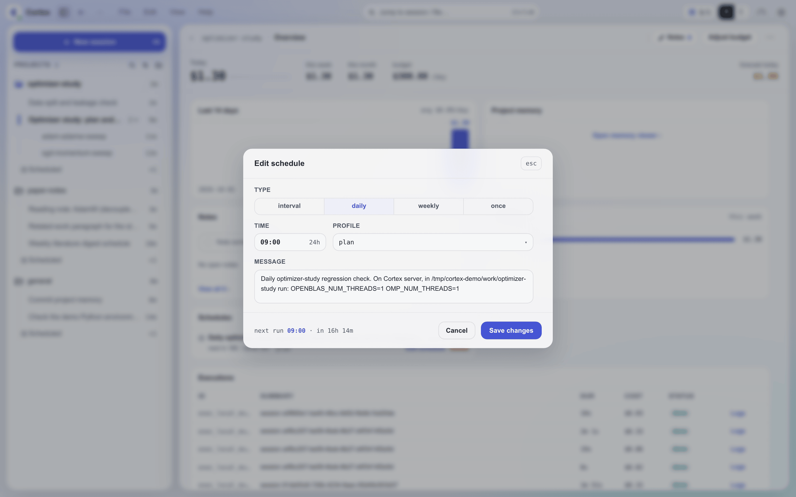

Cortex 调度系统¶
调度系统用于设置周期性或一次性的智能体调用。调度持久化到磁盘，重启后依然保留，被外部修改时会热重载。每次触发都会新开一个会话来运行调度的提示。Provider 用量采集和记忆索引重建等 daemon 基础设施循环由下文介绍的内置作业控制器运行，不使用调度记录。
在等某件事结束？别用调度去轮询
只为检查任务是否完成而触发的调度，每次都要花掉一整轮 agent，而其中几乎每一轮 都一无所获。改用 waitpoint：任务结束时自己回报， session 恰好被唤醒一次。调度用于该按时钟发生的工作，而不是用来盯着别的东西。
调度类型¶
支持四种触发类型：
| 类型 | 描述 | 关键参数 | 示例 |
|---|---|---|---|
interval |
每 N 个时间单位触发一次 | interval（如 "5m"、"1h"、"30s"） |
每 5 分钟运行一次状态检查 |
daily |
每天在固定时间触发 | time（HH:MM 24 小时制） |
每天 09:00 运行每日摘要 |
weekly |
每周在固定的某天某时触发 | dayOfWeek（0-6，0=周日）、time |
每周一 21:00 运行周回顾 |
once |
延迟一段时间后触发一次 | delay（时长字符串） |
2 小时后发送提醒 |
时长字符串的格式为 <number><unit>，其中 unit 为 s（秒）、m（分钟）、h（小时）或 d（天），不区分大小写，数字可以带小数部分。示例："30s"、"5m"、"1.5h"、"1d"。不带单位的数字字符串会被拒绝，所以 "30" 绝不会被当成 30 毫秒；传 JSON 数字的调用方（如 Web UI）给的是毫秒。星期写作 sun..sat（不区分大小写）或 0-6，时间为服务器本地时间的 24 小时制 HH:MM，小时必须是两位（写 09:00，不写 9:00）。消息会去掉首尾空白，且不能为空。
管理调度¶

所有入口使用同一套校验，写同一个 schedules.json：
| 入口 | 使用者 |
|---|---|
schedule skill → cortex schedule |
会话内的智能体（见智能体工作流） |
cortex schedule |
脚本和终端（见 CLI） |
!schedule |
Slack 或飞书里的聊天命令（见聊天命令） |
| Web UI / 桌面端 | 调度列表和编辑器；可设置除 preCheck 外的所有字段，once 调度的时间在创建后固定 |
Web 和移动端编辑器选择模型与思考档位。CLI 与聊天命令的 --model 接受模型 id 或 PI 的 provider/model，选择时读取模型记忆；--thinking 可覆盖档位。创建或编辑时保存完整选择，触发时使用该快照。
调度记录¶
每个调度以 JSON 对象的形式存储在 ~/.cortex/data/schedules.json 中：
{
"tasks": [
{
"id": "d6f1bb1e",
"type": "interval",
"message": "Check the active projects and report blockers",
"projectId": "general",
"selection": {
"backend": "claude",
"provider": null,
"model": "haiku",
"thinking": null,
"mode": "plan"
},
"intervalMs": 3600000,
"createdAt": 1747680000000,
"nextRun": 1747683600000,
"lastRun": 1747680000000
}
]
}
ScheduleTask 字段¶
| 字段 | 描述 |
|---|---|
id |
8 字符十六进制标识符（自动生成） |
type |
interval、daily、weekly 或 once |
message |
调度触发时发送的提示（触发时自动加上 [Scheduled Task] 前缀） |
projectId |
调度所属的项目；每次触发的会话都在这个项目中打开 |
selection |
完整引擎选择：backend、provider、model、thinking、mode。未指定时保存创建时的配置默认选择；之后更换默认值或模型记忆不影响已有调度 |
intervalMs |
interval 类型：两次触发之间的毫秒数 |
time |
daily/weekly 类型：HH:MM 24 小时制时间 |
dayOfWeek |
weekly 类型：0-6（0=周日） |
runAt |
once 类型：触发时刻的纪元毫秒数 |
nextRun |
计算得出的下一次触发时刻（纪元毫秒） |
createdAt |
调度创建时刻（纪元毫秒） |
lastRun |
最近一次交给 runner 的触发时刻（纪元毫秒），包括因上一次运行尚未结束或 所选引擎被限速而被 runner 跳过的触发。once 调度在触发时即被删除，从不记录该字段 |
lastSkipped |
最近一次被跳过的触发时刻（纪元毫秒，preCheck 失败） |
isPaused |
调度当前是否暂停 |
pausedAt |
暂停时刻（纪元毫秒） |
pausedBy |
调度暂停期间为 "user" |
dispatchType |
保留的内部处理器键；普通用户调度不填写 |
preCheck |
可选的 shell 命令；非零退出 → 跳过此次触发 |
idempotencyKey |
由 cortex schedule add --idempotency-key 写入；用同一个 key 重试会返回这个调度 |
内置周期作业¶
Provider 用量采集和记忆索引重建是 daemon 自有的作业。它们不会出现在 schedules.json、!schedule list、cortex schedule list 或 Web 调度列表中。它们的开关和间隔是 config/settings.json 中的两组键：providerUsageCollectionEnabled / providerUsageCollectionIntervalMs（默认开启，每 5 分钟一次）和 memoryIndexRegenEnabled / memoryIndexRegenIntervalMs（默认开启，每 24 小时一次）。记忆索引这一组也可以在 设置 → 高级 → 数据与维护 中设置。
已启用的作业会在 daemon 启动时运行一次。设置修改会热重载：禁用作业会清除它的下一个 timer，启用作业会立即运行一次，修改间隔会重新安排下一次空闲运行。默认值和取值范围见 configuration.md。
触发后在哪里运行¶
每次触发都会新开一个普通会话——与你在 Web UI 或桌面端新建的会话相同——并把调度的消息加上
[Scheduled Task] 前缀作为它的第一轮发送。该会话被记为这个调度的一次运行，并以消息的前
60 个字符作为标题。触发从不复用之前运行的会话，因此周期性调度的每次运行各有独立的记录。
在工作台中，会话栏的 Scheduled 分组为每个调度显示一行。周期性调度的那一行打开其运行列表；
once 调度的那一行打开它的那次运行。回复某次运行会把它变成普通对话，随后移入常规的会话时间线。
会话在调度的 projectId 中打开，该项目在创建调度时确定。cortex schedule 和 Web UI
直接接受项目参数，默认为 general。智能体通过 --project 显式传入目标项目；!schedule
使用创建所在频道登记的项目，否则使用 general。如果触发时该项目已不存在，会话会在消息中
提到的项目中打开，否则在 general 中打开。
PreCheck¶
preCheck 字段是一个可选的 shell 命令，起门控作用：如果命令以非零状态退出，该周期的调度触发会被跳过。调度按正常节奏安排到下一个周期——不会快速重试。
命令在 shell 中运行，不阻塞事件循环，超时为 15 秒。它会收到 PRECHECK_LAST_RUN 环境变量（任务 lastRun 字段的纪元毫秒数）。工作目录为 DATA_DIR（~/.cortex/）。
preCheck 的使用场景：
- 运行前检查必需的文件是否存在：
test -f ~/.cortex/data/schedules.json - 检查某个进程是否在运行：
pgrep -f "python train.py" - 检查系统负载：
[ $(cat /proc/loadavg | cut -d' ' -f1 | cut -d. -f1) -lt 8 ]
热重载¶
只有 daemon 的调度器会触发调度。daemon 与 cortex schedule 共用持久化的记录；CLI
直接写入 schedules.json。调度器用 fs.watch 监视这个文件，在最后一次变更 300ms 后：
- 绕过内存副本，从磁盘读取文件
- 移除已不在文件中的任务的 timer
- 添加新任务的 timer
- 重新设置调度配置有变化的任务（通过比较配置哈希检测）
- 发送管理通知：
🔄 schedules.json hot-reloaded: +N -M ~P task(s), T total
调度器自己的写入同样会触发监视器；随后的重载发现没有变化，不发通知。每次写入（包括 daemon 自己的）都会在写入过程中重新读取文件，因此其他进程刚做的修改会被保留，不会被过期副本覆盖。
用于变更检测的配置哈希¶
每个任务中与调度相关的字段会被哈希：type、该类型对应的时间字段（intervalMs、time、dayOfWeek、runAt）、message、projectId、selection、dispatchType、preCheck，以及是否暂停。如果文件中某个任务的哈希与当前已设置的不同，就重新设置它的 timer，因此任何写入方所做的编辑、暂停或恢复都无需重启即可生效。
运行中保护¶
如果调度触发时它的上一次运行仍在进行，这次触发会被跳过，以防同一调度的运行相互重叠。被跳过的触发仍记为该调度的 lastRun，下一次触发按正常时间进行。
暂停和恢复¶
暂停¶
interval、daily 和 weekly 类型的调度可以暂停。暂停或恢复 once 调度会被拒绝并报错；它要么触发，要么被移除。
暂停时：
- isPaused 设为 true，pausedAt 记录时间戳，pausedBy 记录 "user"
- nextRun 设为 null
- 清除内存中的 timer，且不会重新设置
暂停的调度会一直保持暂停，直到被恢复。暂停一个已暂停的调度、或恢复一个正在运行的调度，都不会产生任何变化。
恢复¶
恢复时：
- isPaused 设为 false，清除 pausedAt 和 pausedBy
- 根据调度类型重新计算 nextRun（interval：now + intervalMs；daily/weekly：下一次出现的时间）
- 重新设置 timer
移除¶
调度可以按 ID 删除。timer 被清除，条目从 schedules.json 中移除。移除是幂等的：对不存在的 id，cortex schedule remove 报告 "removed": false，Web UI 和 !schedule remove 则报告找不到该调度。
启动行为¶
服务器启动时，调度器：
- 丢弃逾期超过 1 分钟（已过其
runAt）的once任务， 并为每个任务发送一条管理通知：Schedule <id> skipped (<n>s overdue): <message> - 按计算出的
nextRun时间安排其余所有任务。若某个interval任务的nextRun在服务器停机期间已过，它会立即触发；停机期间错过的daily或weekly触发不会补跑，而是安排下一次出现的时间 - 启动用于热重载的文件监视器
- 记录任务总数
智能体工作流¶
schedule skill 用 cortex schedule 完成所有调度操作。CLI 在 Cortex 服务器上使用其
CORTEX_HOME 运行，不会从调用它的会话或频道推断项目。智能体使用用户显式指定的项目，或从
会话上下文或 cortex_context 解析出会话所属项目，然后在添加调度时传入 --project <id>。
如果用户要求使用当前项目但取不到项目，应询问用哪个项目，而不是回退到 general。不能保证
Bash 带有会话专属的环境变量，在 PI 上也是如此。创建时不传模型相关标志会保存配置的默认选择，
它可能与当前会话不同。--model 选择模型，--thinking 指定其后端原生档位。
每条消息都必须自包含：触发的会话需要知道项目、run、机器和文件路径，而不是引用创建调度时的对话。
每日和每周的时间使用服务器本地时区。先把用户时区下的请求换算为服务器时区，再设置 --time，
每周调度还要设置 --day；报告 nextRun 时换算回用户时区。要核实 daemon 实际使用的时区，
包括任何 TZ 覆盖。调度不支持单独设置时区；两地夏令时切换不同步时，用户当地的周期触发时间
可能发生偏移。换算不确定时先澄清，在有影响时说明这一限制。
CLI¶
cortex schedule 在智能体会话、终端或脚本中管理同一批调度。它的子命令有 list、get、add、edit、pause、resume 和 remove。所有命令都输出带 ISO 时间戳的 JSON，时间参数全部由显式 flag 给出，较长的提示可以从 stdin 读入：
cortex schedule add --type daily --time 09:00 --project nimbus --message "Summarize yesterday's sessions"
echo "Check training run r42 on trainer" | cortex schedule add --type once --delay 2h --message -
cortex schedule list --project nimbus
cortex schedule get a1b2c3d4
cortex schedule edit a1b2c3d4 --time 10:30
cortex schedule pause a1b2c3d4
cortex schedule remove a1b2c3d4 --dry-run
与调度类型不符的时间 flag 会被拒绝，edit 也不能修改类型；对 once 调度执行 edit --delay 会把触发时间设为当前时间加上该延迟。正在运行的 daemon 会在一秒内应用变更。全部选项见 cli-reference.md。
聊天命令¶
!schedule 命令在 Slack 或飞书中管理调度。在这里添加的调度属于该频道登记的项目，否则属于 general。
| 命令 | 描述 |
|---|---|
!schedule / !schedule list |
列出所有调度及其状态和下次运行时间。前十个调度附带按钮：周期性调度为 Pause 或 Resume，once 调度为 Remove |
!schedule add interval <duration> [--model <[provider/]model>] [--thinking <level>] <message> |
每隔一段时间重复（--model 紧跟在时间参数之后） |
!schedule add daily <HH:MM> [--model <[provider/]model>] [--thinking <level>] <message> |
每天在固定时间运行 |
!schedule add weekly <day> <HH:MM> [--model <[provider/]model>] [--thinking <level>] <message> |
每周在固定的某天运行 |
!schedule add once <duration> [--model <[provider/]model>] [--thinking <level>] <message> |
延迟一段时间后运行一次 |
!schedule pause <id> |
暂停周期性调度 |
!schedule resume <id> |
恢复已暂停的调度 |
!schedule remove <id> |
移除调度 |
执行路由¶
普通调度记录使用 scheduled-task runner：每次触发新开一个会话，并发送带 [Scheduled Task] 前缀的消息。记录也可以在 dispatchType 中指定一个内部处理器；已注册的键为 auth-expiry-scan 和 sync-public，未注册的 dispatchType 会记录日志并跳过，不会被当作 agent prompt 解释。daemon 自有的周期基础设施使用内置作业控制器，不经过调度持久化。
速率限制¶
调度所选引擎被限速时，会跳过本次触发并发出警告通知。周期性调度保持原有安排，在下一次计划时间触发；once 调度在触发时删除，不会再次尝试。其他启动失败（例如路由无效）也会发送通知。运行开始后才遇到限速的，会像其他会话一样暂停并在之后恢复。